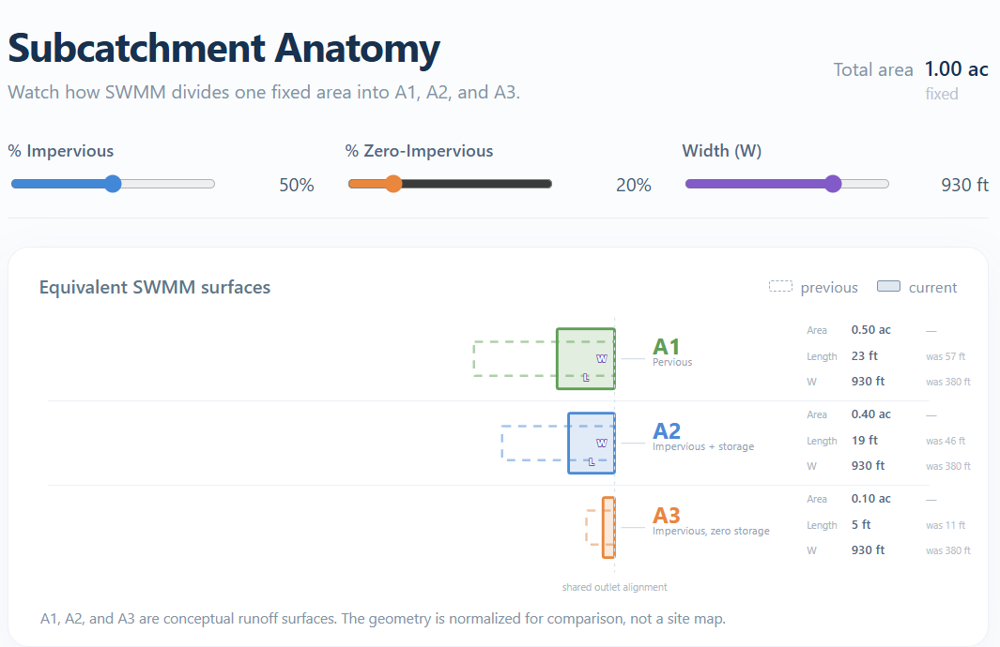
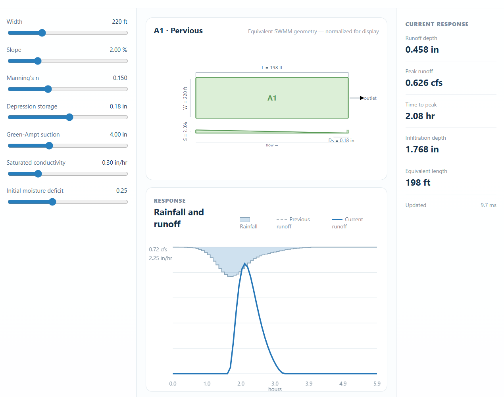

EPA SWMM5 in the browser
SWMM educational tools
Small, independent teaching tools that run the real SWMM5 WebAssembly engine locally in your browser. No simulation server and no runtime build step.
SWMM5 RUNOFF

Hydrology · geometry Subcatchment anatomy See how imperviousness and depression storage divide one catchment into SWMM’s A1, A2, and A3 runoff surfaces.
Hydrology · WASM Surface Lab One surface. One fixed storm. Change the physical representation and watch the runoff response.